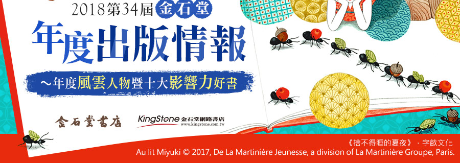

    <div id="fb-root"></div>
    <script>(function(d, s, id) {
      var js, fjs = d.getElementsByTagName(s)[0];
      if (d.getElementById(id)) return;
      js = d.createElement(s); js.id = id;
      js.src = 'https://connect.facebook.net/zh_TW/sdk.js#xfbml=1&version=v3.2';
      fjs.parentNode.insertBefore(js, fjs);
    }(document, 'script', 'facebook-jssdk'));</script>

    <div class="head">
        <div class="headCenter">
          
          <div class="fb-like" data-href="https://www.kingstone.com.tw/event/1811_a234/234.asp" data-layout="button_count" data-action="like" data-size="large" data-show-faces="false" data-share="true"></div>
          
        </div><!--headCenter end-->
    </div><!--head end刊頭-->
